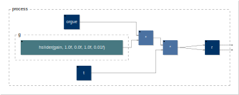
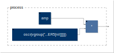
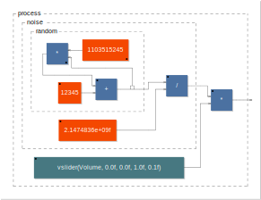

generator
filterOsc

declare name "filterOSC";
declare version "0.0";
declare author "JOS, revised by RM";
declare description "Simple application demoing filter based oscillators.";
import("stdfaust.lib");
process = dm.oscrs_demo;
kisana

process = vgroup("Kisana",environment{declare name "Kisana";
declare author "Yann Orlarey";
//Modifications GRAME July 2015
/* ========= DESCRITPION =============
- Kisana : 3-loops string instrument (based on Karplus-Strong)
- Head = Silence
- Tilt = High frequencies
- Front = High + Medium frequencies
- Bottom = High + Medium + Low frequencies
- Left = Minimum brightness
- Right = Maximum birghtness
- Front = Long notes
- Back = Short notes
*/
import("stdfaust.lib");
KEY = 60; // basic midi key
NCY = 15; // note cycle length
CCY = 15; // control cycle length
BPS = 360; // general tempo (ba.beat per sec)
process = kisana;
//-------------------------------kisana----------------------------------
// USAGE: kisana : _,_;
// 3-loops string instrument
//-----------------------------------------------------------------------
kisana = vgroup("Kisana", harpe(C,11,48), harpe(C,11,60), (harpe(C,11,72) : *(1.5), *(1.5))
:>*(l))
with {
l = -20 : ba.db2linear;//hslider("[1]Volume",-20, -60, 0, 0.01) : ba.db2linear;
C = hslider("[2]Brightness[acc:0 1 -10 0 10]", 0.2, 0, 1, 0.01) : ba.automat(BPS, CCY, 0.0);
};
//----------------------------------Harpe--------------------------------
// USAGE: harpe(C,10,60) : _,_;
// C is the filter coefficient 0..1
// Build a N (10) strings harpe using a pentatonic scale
// based on midi key b (60)
// Each string is triggered by a specific
// position of the "hand"
//-----------------------------------------------------------------------
harpe(C,N,b) = hand(b) <: par(i, N, position(i+1)
: string(C,Penta(b).degree2Hz(i), att, lvl)
: pan((i+0.5)/N) )
:> _,_
with {
att = hslider("[3]Resonance[acc:2 1 -10 0 12]", 4, 0.1, 10, 0.01);
hand(48) = vslider("h:[1]Instrument Hands/1 (Note %b)[unit:pk][acc:1 0 -10 0 14]", 0, 0, N, 1) : int : ba.automat(120, CCY, 0.0);
hand(60) = vslider("h:[1]Instrument Hands/2 (Note %b)[unit:pk][acc:1 0 -10 0 14]", 2, 0, N, 1) : int : ba.automat(240, CCY, 0.0);
hand(72) = vslider("h:[1]Instrument Hands/3 (Note %b)[unit:pk][acc:1 0 -10 0 10]", 4, 0, N, 1) : int : ba.automat(480, CCY, 0.0);
//lvl = vslider("h:loop/level", 0, 0, 6, 1) : int : ba.automat(BPS, CCY, 0.0) : -(6) : ba.db2linear;
lvl = 1;
pan(p) = _ <: *(sqrt(1-p)), *(sqrt(p));
position(a,x) = abs(x - a) < 0.5;
};
//----------------------------------Penta-------------------------------
// Pentatonic scale with degree to midi and degree to Hz conversion
// USAGE: Penta(60).degree2midi(3) ==> 67 midikey
// Penta(60).degree2Hz(4) ==> 440 Hz
//-----------------------------------------------------------------------
Penta(key) = environment {
A4Hz = 440;
degree2midi(0) = key+0;
degree2midi(1) = key+2;
degree2midi(2) = key+4;
degree2midi(3) = key+7;
degree2midi(4) = key+9;
degree2midi(d) = degree2midi(d-5)+12;
degree2Hz(d) = A4Hz*semiton(degree2midi(d)-69) with { semiton(n) = 2.0^(n/12.0); };
};
//----------------------------------String-------------------------------
// A karplus-strong string.
//
// USAGE: string(440Hz, 4s, 1.0, button("play"))
// or button("play") : string(440Hz, 4s, 1.0)
//-----------------------------------------------------------------------
string(coef, freq, t60, level, trig) = no.noise*level
: *(trig : trigger(freq2samples(freq)))
: resonator(freq2samples(freq), att)
with {
resonator(d,a) = (+ : @(d-1)) ~ (average : *(a));
average(x) = (x*(1+coef)+x'*(1-coef))/2;
trigger(n) = upfront : + ~ decay(n) : >(0.0);
upfront(x) = (x-x') > 0.0;
decay(n,x) = x - (x>0.0)/n;
freq2samples(f) = 44100.0/f;
att = pow(0.001,1.0/(freq*t60)); // attenuation coefficient
random = +(12345)~*(1103515245);
noise = random/2147483647.0;
};
}.process);
noise
// WARNING: This a "legacy example based on a deprecated library". Check noises.lib
// for more accurate examples of noise functions
declare name "Noise";
declare version "1.1";
declare author "Grame";
declare license "BSD";
declare copyright "(c)GRAME 2009";
//-----------------------------------------------------------------
// Noise generator and demo file for the Faust math documentation
//-----------------------------------------------------------------
<mdoc>
\section{Presentation of the "noise.dsp" Faust program}
This program describes a white noise generator with an interactive volume, using a random function.
\subsection{The random function}
The \texttt{random} function describes a generator of random numbers, which equation follows. You should notice hereby the use of an integer arithmetic on 32 bits, relying on integer wrapping for big numbers.
<equation>random</equation>
\subsection{The noise function}
The white noise then corresponds to:
<equation>noise</equation>
</mdoc>
random = +(12345)~*(1103515245);
noise = random/2147483647.0;
<mdoc>
\subsection{Just add a user interface element to play volume!}
Endly, the sound level of this program is controlled by a user slider, which gives the following equation:
<equation>process</equation>
</mdoc>
<mdoc>
\section{Block-diagram schema of process}
This process is illustrated on figure 1.
<diagram>process</diagram>
</mdoc>
process = noise * vslider("Volume[style:knob][acc: 0 0 -10 0 10]", 0.5, 0, 1, 0.1);
<mdoc>
\section{Notice of this documentation}
You might be careful of certain information and naming conventions used in this documentation:
<notice/>
\section{Listing of the input code}
The following listing shows the input Faust code, parsed to compile this mathematical documentation.
<listing/>
</mdoc>
noiseMetadata

// WARNING: This a "legacy example based on a deprecated library". Check noises.lib
// for more accurate examples of noise functions
<mdoc>
\title{<metadata>name</metadata>}
\author{<metadata>author</metadata>}
\date{\today}
\maketitle
\begin{tabular}{ll}
\hline
\textbf{name} & <metadata>name</metadata> \\
\textbf{version} & <metadata>version</metadata> \\
\textbf{author} & <metadata>author</metadata> \\
\textbf{license} & <metadata>license</metadata> \\
\textbf{copyright} & <metadata>copyright</metadata> \\
\hline
\end{tabular}
\bigskip
</mdoc>
//-----------------------------------------------------------------
// Noise generator and demo file for the Faust math documentation
//-----------------------------------------------------------------
declare name "noiseMetadata"; // avoid same name as in noise.dsp
declare version "1.1";
declare author "Grame";
declare author "Yghe";
declare license "BSD";
declare copyright "(c)GRAME 2009";
<mdoc>
\section{Presentation of the "noise.dsp" Faust program}
This program describes a white noise generator with an interactive volume, using a random function.
\subsection{The random function}
</mdoc>
random = +(12345)~*(1103515245);
<mdoc>
The \texttt{random} function describes a generator of random numbers, which equation follows. You should notice hereby the use of an integer arithmetic on 32 bits, relying on integer wrapping for big numbers.
<equation>random</equation>
\subsection{The noise function}
</mdoc>
noise = random/2147483647.0;
<mdoc>
The white noise then corresponds to:
<equation>noise</equation>
\subsection{Just add a user interface element to play volume!}
</mdoc>
process = noise * vslider("Volume[style:knob]", 0, 0, 1, 0.1);
<mdoc>
Endly, the sound level of this program is controlled by a user slider, which gives the following equation:
<equation>process</equation>
\section{Block-diagram schema of process}
This process is illustrated on figure 1.
<diagram>process</diagram>
\section{Notice of this documentation}
You might be careful of certain information and naming conventions used in this documentation:
<notice />
\section{Listing of the input code}
The following listing shows the input Faust code, parsed to compile this mathematical documentation.
<listing mdoctags="false" dependencies="false" distributed="false" />
</mdoc>
osc

declare name "osc";
declare version "1.0";
declare author "Grame";
declare license "BSD";
declare copyright "(c)GRAME 2009";
//-----------------------------------------------
// Sinusoidal Oscillator
//-----------------------------------------------
import("stdfaust.lib");
vol = hslider("volume [unit:dB]", 0, -96, 0, 0.1) : ba.db2linear : si.smoo;
freq = hslider("freq [unit:Hz]", 1000, 20, 24000, 1);
process = vgroup("Oscillator", os.osc(freq) * vol);
osci
declare name "osci";
declare version "1.0";
declare author "Grame";
declare license "BSD";
declare copyright "(c)GRAME 2009";
//-----------------------------------------------
// Sinusoidal Oscillator
// (with linear interpolation)
//-----------------------------------------------
import("stdfaust.lib");
vol = hslider("volume [unit:dB]", 0, -96, 0, 0.1) : ba.db2linear : si.smoo ;
freq = hslider("freq [unit:Hz]", 1000, 20, 24000, 1);
process = vgroup("Oscillator", os.osci(freq) * vol);
sawtoothLab
declare name "sawtoothLab";
declare version "0.0";
declare author "JOS, revised by RM";
declare description "An application demonstrating the different sawtooth oscillators of Faust.";
import("stdfaust.lib");
process = dm.sawtooth_demo;
virtualAnalog
declare name "VirtualAnalog";
declare version "0.0";
declare author "JOS, revised by RM";
declare description "Virtual analog oscillator demo application.";
import("stdfaust.lib");
process = dm.virtual_analog_oscillator_demo;